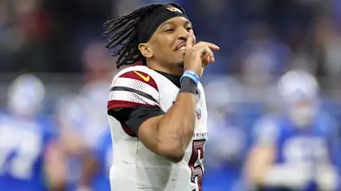
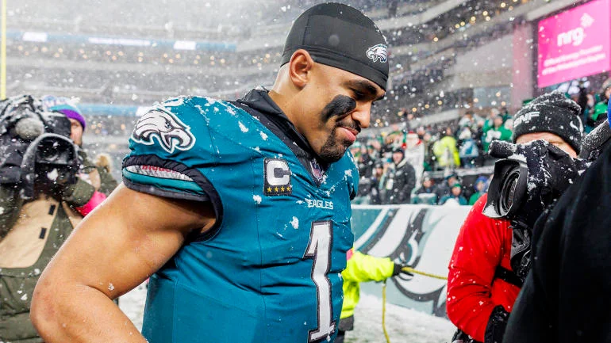
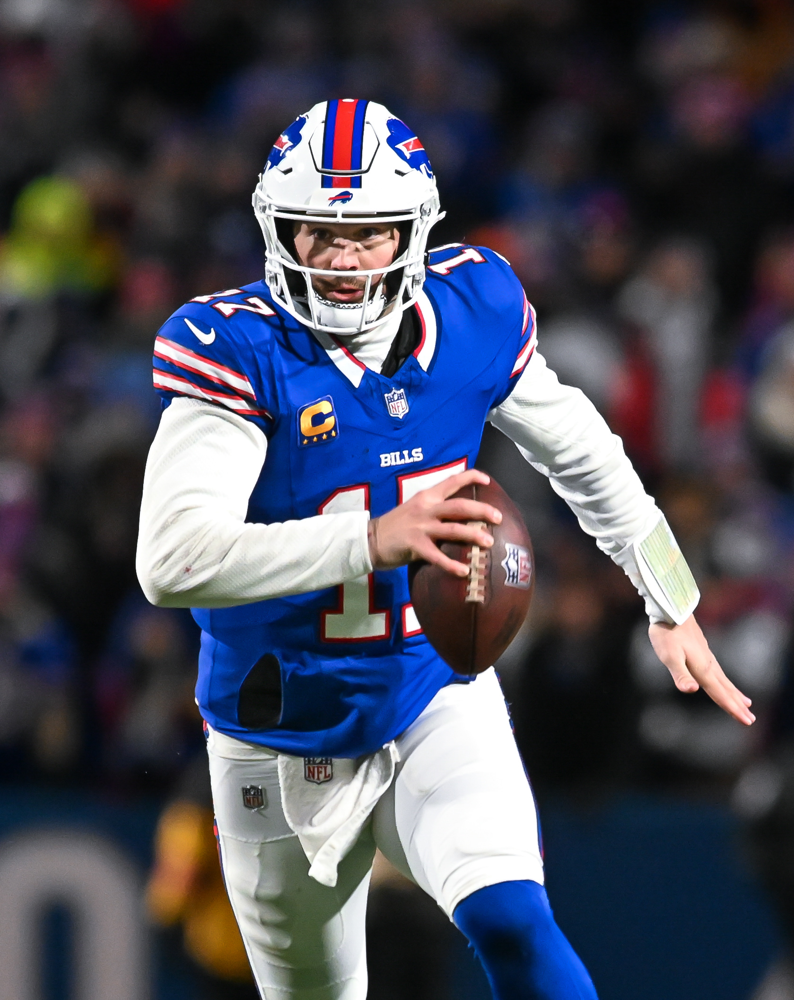

Patrick Mahomes is widely regarded as one of the best quarterbacks of all time due to his exceptional talent, leadership, and ability to perform under pressure. His strong arm, accuracy, and quick decision-making skills make him a formidable opponent on the field. Additionally, Mahomes' ability to extend plays with his mobility and his knack for making incredible throws from various angles set him apart from other quarterbacks. Furthermore, add in Travis Kelce, who's numbers in the playoffs are nothing short of extraordinary, and you have the most dynamic offensive duo since Tom Brady and Rob Gronkowski. Mahomes and the Chiefs receive favorable calls from referees, giving them an inherent advantage in close games.

Washington Commanders
Jayden Daniels has quickly become one of the most exciting quarterbacks in the NFL. His ability to read defenses, make quick decisions and stay poised, and deliver accurate passes under pressure sets him apart from his peers. Additionally, his athleticism allows him to extend plays with his legs, making him a dual-threat quarterback who is difficult to defend against.

Philadelphia Eagles
The Philadelphia Eagles will come up short against the Washington Commanders due to their lackluster pass offense' inaability to trade jabs with arguably the best rooke qb ever in Jayden Daniels. The Eagles will need to play their best game to overcome the Commanders' experience and talent. With Hurts injured, that's unlikely.

Buffalo Bills
The Buffalo Bills have had a strong season, but they face a tough challenge against the Kansas City Chiefs in the Division Round. They have not been able to overcome the hump of the post season Chiefs in years past, why is this year any different? The Chiefs have a high-powered offense led by Patrick Mahomes, and their defense has improved significantly over the season. The Bills will need to play their best game to overcome the Chiefs' experience and talent, and the referee's biases for the Chiefs.